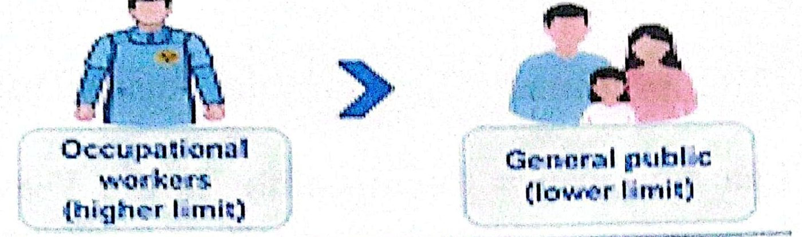
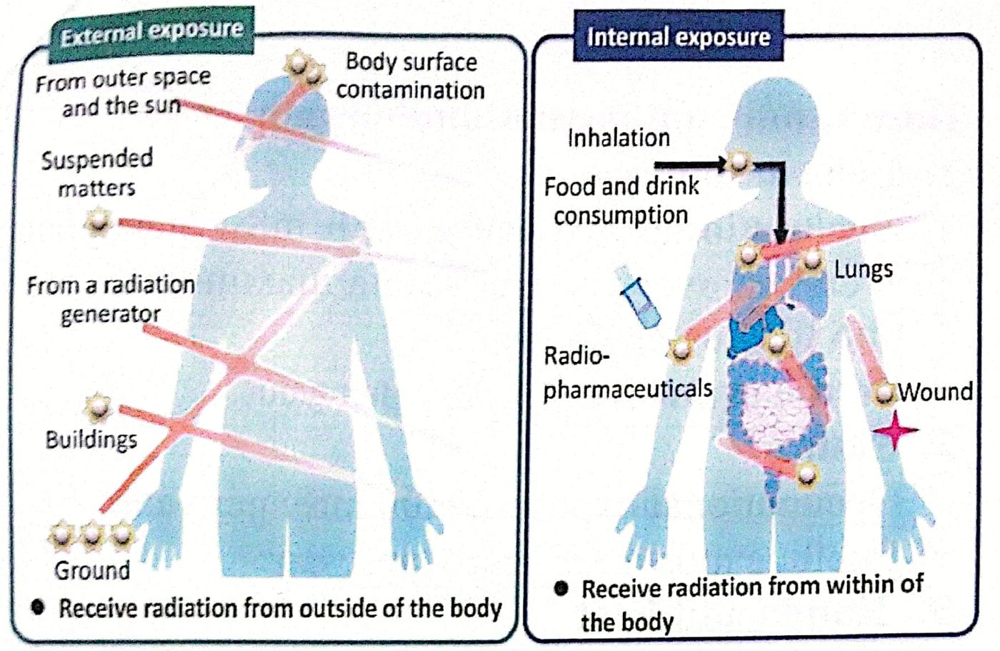

حدود الجرعةDose Limits
نظري · م04 · 3.2 دقيقةأقسام المحاضرة (6)
- تحديد الجرعةDose Limitation
- الجرعات المهنية القصوى المسموح بهاMaximum Permissible Occupational Doses
- أمثلة على حساب الجرعة الفعالة السنويةExamples: Annual Effective Dose
- الجرعة القصوى المسموح بها لعامة الناسThe Maximum Permissible Public Dose
- حدود جرعة الجسم كلهWhole Body Dose Limits
- حدود الجرعة للأنسجة والأعضاءDose Limits for Tissues and Organs
تحديد الجرعةDose Limitation
Dose limitation involves setting and enforcing exposure limits for both occupational workers and the general public.
يتضمن تحديد الجرعة وضع حدود للتعرض وفرض الالتزام بها لكلٍّ من العاملين المعرَّضين مهنياً وعامة الناس.
These limits are typically expressed in terms of effective dose and are designed to prevent radiation related health effects.
يُعبَّر عن هذه الحدود عادةً بالجرعة الفعالة، وهي مصممة لمنع الآثار الصحية المرتبطة بالإشعاع.
Occupational exposure limits are generally higher than those for the general public but they are still subject to the ALARA principle.
حدود التعرض المهني أعلى عموماً من حدود عامة الناس، لكنها تبقى خاضعة لمبدأ ALARA (أقل ما يمكن بلوغه بصورة معقولة).

الجرعات المهنية القصوى المسموح بهاMaximum Permissible Occupational Doses
These limits are set to ensure the safety of radiation workers and to minimize the risk of harmful health effects from radiation exposure.
وُضعت هذه الحدود لضمان سلامة العاملين بالإشعاع، وتقليل خطر الآثار الصحية الضارة للتعرض للإشعاع.
The specific dose limits can vary depending on the country and the regulatory authority, but they are generally based on recommendations from international organizations like the International Commission on Radiological Protection (ICRP).
قد تختلف الحدود المحددة بحسب البلد والجهة الرقابية، لكنها مبنية عموماً على توصيات منظمات دولية مثل اللجنة الدولية للوقاية من الإشعاع (ICRP).
للعاملين المعرَّضين مهنياً فوق 18 سنةFor occupationally exposed workers over 18 years of age:
أمثلة على حساب الجرعة الفعالة السنويةExamples: Annual Effective Dose
مثال (1)Example (1)
A radiologic technologist working in an X-ray department receives an effective dose of 2 mSv per month from occupational exposure. Calculate the total effective dose received in one year.
تقني أشعة يعمل في قسم الأشعة السينية يتلقى جرعة فعالة مقدارها 2 mSv في الشهر من التعرض المهني. احسب مجموع الجرعة الفعالة التي يتلقاها في سنة واحدة.
Solution: Annual Effective Dose = 2 × 12 = 24 mSv/year
الحل: الجرعة الفعالة السنوية = 2 × 12 = 24 mSv في السنة.
مثال (2)Example (2)
A radiologic technologist receives an effective dose of 2 mSv in 4 months. Calculate the effective dose received in one year.
تقني أشعة يتلقى جرعة فعالة مقدارها 2 mSv في 4 أشهر. احسب الجرعة الفعالة التي يتلقاها في سنة واحدة.
Solution: Annual Effective Dose = 2 × 3 = 6 mSv/year
الحل: في السنة 3 فترات من 4 أشهر، فالجرعة الفعالة السنوية = 2 × 3 = 6 mSv في السنة.
الجرعة القصوى المسموح بها لعامة الناسThe Maximum Permissible Public Dose
The public dose limit is typically set at a much lower level than the occupational dose limit to provide an additional margin of safety.
يُحدَّد حد جرعة عامة الناس عادةً بمستوى أقل بكثير من حد الجرعة المهنية لتوفير هامش أمان إضافي.
لأفراد عامة الناسFor members of the general public:
حدود جرعة الجسم كلهWhole Body Dose Limits
These limits are set to protect individuals, especially radiation workers and members of the public, from the harmful effects of ionizing radiation.
وُضعت هذه الحدود لحماية الأفراد، ولا سيما العاملين بالإشعاع وأفراد الجمهور، من الآثار الضارة للإشعاع المؤيِّن.

حدود الجرعة للأنسجة والأعضاءDose Limits for Tissues and Organs
Dose limits for tissues and organs are established to minimize the risk of radiation-induced health effects from occupational exposure.
تُوضع حدود الجرعة للأنسجة والأعضاء لتقليل خطر الآثار الصحية الناجمة عن الإشعاع من التعرض المهني.
These limits are based on recommendations from organizations such as:
وهذه الحدود مبنية على توصيات منظمات مثل:
- 1. International Commission on Radiological Protection (ICRP).اللجنة الدولية للوقاية من الإشعاع (ICRP).
- 2. United States Nuclear Regulatory Commission (NRC).هيئة التنظيم النووي الأمريكية (NRC).
1. عدسة العينLens of the Eye
2. الجلدSkin
3. اليدان والقدمانHands and Feet
المحاضرة مسموعة
نص الأستاذ بالإنكليزي مثل الأصل · 3.2 دقيقة. اضغط أي جملة تسمعها، أو مصطلح منقّط تسمع لفظه ومعناه.
Dose Limitationتحديد الجرعة
Dose Limitation
Dose limitation involves setting and enforcing exposure limits for both occupational workers and the general public.
These limits are typically expressed in terms of effective dose and are designed to prevent radiation related health effects.
Occupational exposure limits are generally higher than those for the general public but they are still subject to the ALARA principle.
Maximum Permissible Occupational Dosesالجرعات المهنية القصوى المسموح بها
Maximum Permissible Occupational Doses
Maximum Permissible Occupational Doses are established radiation exposure limits for individuals who work with or are exposed to ionizing radiation in their occupational settings.
These limits are set to ensure the safety of radiation workers and to minimize the risk of harmful health effects from radiation exposure.
The specific dose limits can vary depending on the country and the regulatory authority, but they are generally based on recommendations from international organizations like the International Commission on Radiological Protection (ICRP).
For occupationally exposed workers over 18 years of age:
Examples: Annual Effective Doseأمثلة على حساب الجرعة الفعالة السنوية
Examples: Annual Effective Dose
Example (1)
A radiologic technologist working in an X-ray department receives an effective dose of 2 mSv per month from occupational exposure. Calculate the total effective dose received in one year.
Solution: Annual Effective Dose = 2 × 12 = 24 mSv/year
Example (2)
A radiologic technologist receives an effective dose of 2 mSv in 4 months. Calculate the effective dose received in one year.
Solution: Annual Effective Dose = 2 × 3 = 6 mSv/year
The Maximum Permissible Public Doseالجرعة القصوى المسموح بها لعامة الناس
The Maximum Permissible Public Dose
The Maximum Permissible Public Dose is the radiation exposure limit established to protect members of the general public who are not occupationally exposed to ionizing radiation.
The public dose limit is typically set at a much lower level than the occupational dose limit to provide an additional margin of safety.
For members of the general public:
Whole Body Dose Limitsحدود جرعة الجسم كله
Whole Body Dose Limits
Whole body dose limits refer to the maximum permissible radiation exposure that an individual can receive to their entire body a specified period, typically in a year.
These limits are set to protect individuals, especially radiation workers and members of the public, from the harmful effects of ionizing radiation.
Dose Limits for Tissues and Organsحدود الجرعة للأنسجة والأعضاء
Dose Limits for Tissues and Organs
Dose limits for tissues and organs are established to minimize the risk of radiation-induced health effects from occupational exposure.
These limits are based on recommendations from organizations such as:
International Commission on Radiological Protection (ICRP).
United States Nuclear Regulatory Commission (NRC).
Lens of the Eye
Skin
Hands and Feet
20 سؤال من نص المحاضرة، ويّا «ليش صح» بعد كل جواب.
ابدأ الاختباراضغط أي مصطلح منقّط تسمع لفظه ومعناه.
PDF ثنائي اللغة: نص الأستاذ + الترجمة + الخلاصة + الأسئلة · 0.7 MB
تحميل الملف